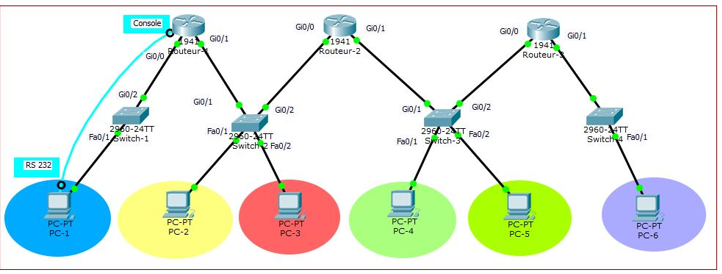
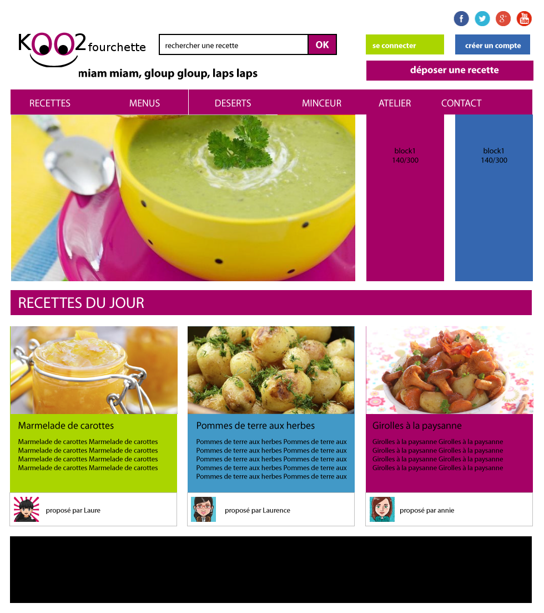

Étudiant en BTS SIO (option SISR) au Campus Saint-Aspais, je suis passionné par la mise en place d'infrastructures solides, de l'administration des serveurs jusqu'au déploiement et à la configuration des équipements réseau sur le terrain.
Lors de mon stage de première année chez 2CER Technologies, j'ai participé à des chantiers réels : tirage et soudure de fibre optique, certification de liens réseau, câblage et étude Wi-Fi. Aujourd'hui en deuxième année, je consolide mes compétences en administration systèmes, réseaux et cybersécurité, et je prépare la certification Cisco CCNA.
Melun, FranceBTS SIO SISRStage : 2CER TechnologiesCCNA en préparation
Préparation active au passage de l'examen Cisco Certified Network Associate (200-301) pour valider mes compétences réseaux.
Stage de 1re année
Technicien systèmes & réseaux · 5 semaines
2CER Technologies
Micro-entreprise d'infrastructures réseau et de sécurité dirigée par un ancien DSI. J'ai été son premier stagiaire et j'ai travaillé à ses côtés sur des chantiers réels : fibre optique, certification de liens, câblage, Wi-Fi et audits clients.
Déploiement physique (fibre optique, bornes Wi-Fi), configuration, virtualisation sous Proxmox et sécurité : vidéosurveillance, tours en métal galvanisé et systèmes anti-drone.
Environnement technique
Équipements Cisco et Alcatel chez les clients, environnement Ubiquiti en interne, serveur Proxmox avec VM Debian de diagnostic, postes en double démarrage Windows 11 / Debian 13.
Mes objectifs
Technique : relier la théorie SISR au terrain. Professionnel : comprendre une petite entreprise, des devis à la logistique des interventions. Pas de planning fixe : les journées suivaient les urgences des clients.
Missions réalisées
Cliquez sur une mission pour voir le contexte, les actions, le résultat et les photos.
Bilan du stage
Ce que j'ai apporté
Câblage complet et étude Wi-Fi des nouveaux locaux
Participation au chantier fibre de la Mégapôle de Grigny
Audits et études pour les clients (Selfstock, Grigny)
Certification de lien pour le centre Medis
Ce que je retiens
Le chantier de Grigny m'a appris ce qu'aucun cours ne montre : gérer un blocage imprévu et souder des brins optiques au micron près. Travailler avec quelqu'un qui explique le pourquoi, pas seulement le comment, m'a confirmé mon envie de m'orienter vers l'infrastructure et le terrain.
Merci à M. CARFIL pour sa confiance et sa pédagogie.
Projets Réalisés

Infrastructure & Virtualisation
Conception, Virtualisation et Déploiement d'une Infrastructure Réseau Sécurisée
Contexte et Objectif :
Dans le cadre de projets de réalisation d'infrastructure, j'ai conçu et déployé l'architecture réseau sécurisée d'une organisation multisite intégrant plusieurs ligues sportives. L'objectif était de segmenter le trafic pour garantir la sécurité des données internes, d'optimiser le routage et de mettre à disposition des services applicatifs critiques.
Pour valider cette architecture au-delà de la simple simulation, j'ai mis en place un laboratoire virtuel complet reproduisant fidèlement les conditions réelles d'un réseau d'entreprise.
Élaboration d'un plan d'adressage IPv4 (VLSM / CIDR) et segmentation VLAN.
Déploiement sous Proxmox VE (isolations réseaux, provisionnement VM).
Sécurisation avec pfSense (Filtrage LAN/DMZ, NAT/Port Forwarding, routes).
Administration de services sous Debian (Web, FTP, DNS, DHCP, GLPI).
Compétences BTS SIO (SISR) mobilisées
Bloc 1 : Support et mise à disposition de services informatiques
Gérer le patrimoine : Planification des ressources (vCPU, RAM, Stockage) et adressage.
Présence en ligne : Déploiement serveur Web fonctionnel en DMZ (redirection de ports).
Bloc 2 : Conception et développement d'une solution d'infrastructure
Concevoir : Maquettage topologie et choix des solutions de virtualisation.
Déployer : Configuration vSwitches, installation systèmes, tests de connectivité de bout en bout.
Bloc 3 : Cybersécurité informatique
Protéger les données : Isolation hermétique des réseaux via ponts réseau distincts.
Préserver l'identité : Durcissement pare-feu pfSense (blocage flux non sollicités).
Sécuriser les équipements : Architecture DMZ pour contenir les risques d'attaques.
Proxmox VEpfSenseDebianCiscoVLAN / DMZ

Développement Web
Koo2Fourchette : Site Web Dynamique
Contexte : KOO2FOURCHETTE est un projet de développement web intégralement conçu dans le cadre de ma première année de BTS SIO.
L'objectif était de développer un site vitrine interactif et esthétique pour le secteur de la restauration, en partant de zéro (maquettage, codage, base de données, et déploiement final).
Missions Techniques
Interface fluide et Responsive Design
Architecture HTML5 & CSS3 sur-mesure
Intégration PHP dynamique
Gestion de base de données (phpMyAdmin)
Déploiement
Hébergement final et mise en ligne du projet pour le rendre accessible au public, démontrant ma capacité à gérer le cycle de vie complet d'une application web, de la conception au serveur en production.
HTML5CSS3PHP 8MySQL / phpMyAdminHébergement Web
Synthèse des compétences — Bloc 1
Tableau de correspondance entre mes réalisations et les six compétences du bloc 1 « Support et mise à disposition de services informatiques » du référentiel BTS SIO.
Réalisation
Gérer le patrimoine informatique
Répondre aux incidents et aux demandes d'assistance
Koo2Fourchette — site web dynamique PHP/MySQLProjet formation
✓
✓
✓
Gestion de parc GLPI — Melun Design (inventaire, tickets)TP 2e année
✓
✓
Réplication MariaDB maître/esclaveTP 2e année
✓
Raccordement fibre inter-bâtiments — Mégapôle de GrignyStage
✓
✓
Certification de lien iperf3 — Centre de santé MedisStage
✓
✓
Audit vidéosurveillance — SelfstockStage
✓
✓
Câblage RJ45 et étude Wi-Fi — locaux 2CERStage
✓
✓
✓
Salon Allnet, MOOC cybersécurité, préparation CCNAVeille / certif.
✓
Ce portfolioPersonnel
✓
✓
Parcours & Formation
Le BTS SIO (Services Informatiques aux Organisations)
Le Brevet de Technicien Supérieur aux Services Informatiques aux Organisations est un diplôme
reconnu par l'État de niveau Bac+2. Il forme aux métiers de l'administration réseau, de la
cybersécurité et du développement d'applications.
L'option SISR (Solutions d'Infrastructure, Systèmes et Réseaux) prépare
spécifiquement à la gestion des parcs informatiques, à l'administration des serveurs et à la
sécurisation des données.
Sept 2026 - 2027
2ème année BTS SIO (SISR)
Campus Saint Aspais, Melun
Préparation aux épreuves finales (Infrastructures complexes, Cybersécurité). Objectif : Consolider mes compétences techniques en vue d'une intégration professionnelle.
Mai - Juin 2026
Stage Technicien Systèmes et Réseaux
2CER Technologies
Immersion en entreprise : tirage de fibre optique, brassage, soudure optique, certification de liens (iperf3), câblage RJ45, étude de couverture Wi-Fi et audit de vidéosurveillance.
2025 - 2026
1ère année BTS SIO (SISR) - Validée
Campus Saint Aspais, Melun
Acquisition des fondamentaux de l'informatique : architecture matérielle, bases de réseaux (Cisco, VLAN), virtualisation de base et algorithmique.
2022 - 2025
Baccalauréat Général
Lycée Simone Signoret
Spécialités Mathématiques et Sciences Économiques et Sociales (SES).
Procédures Techniques
Consultez ou téléchargez mes guides techniques réalisés lors de la formation BTS SIO SISR.